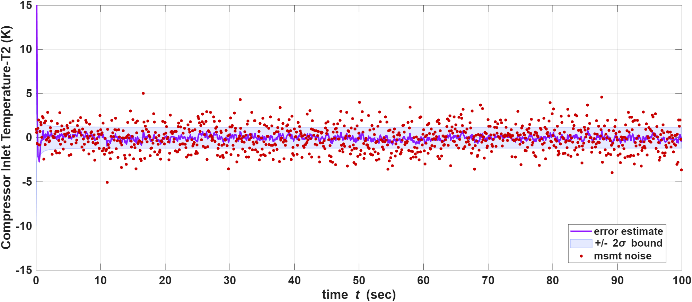
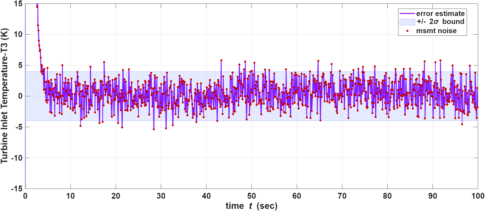
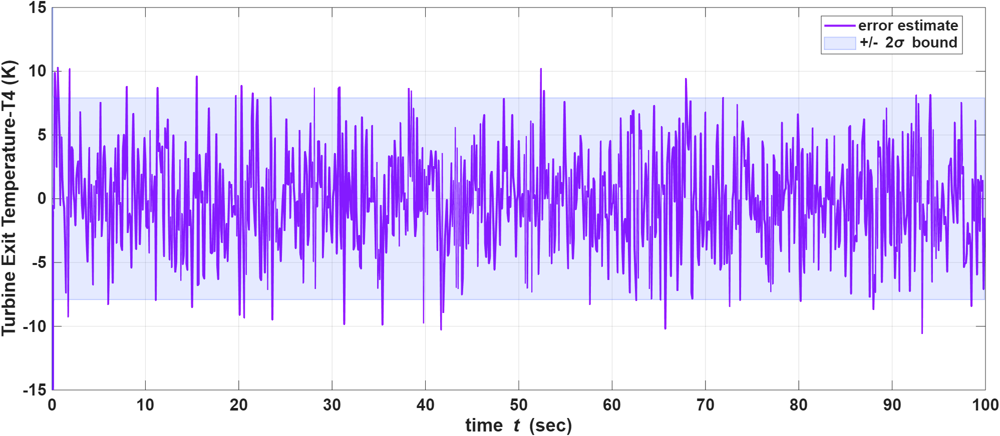
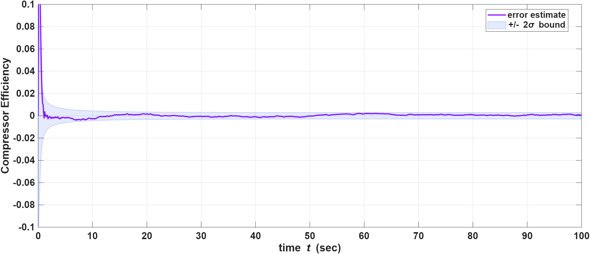
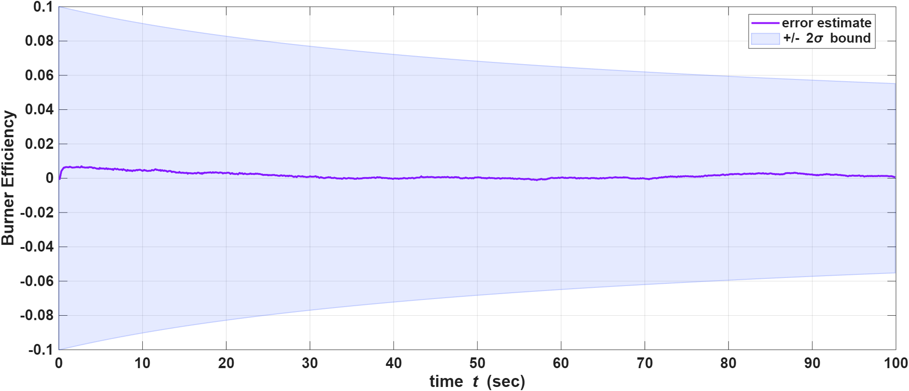
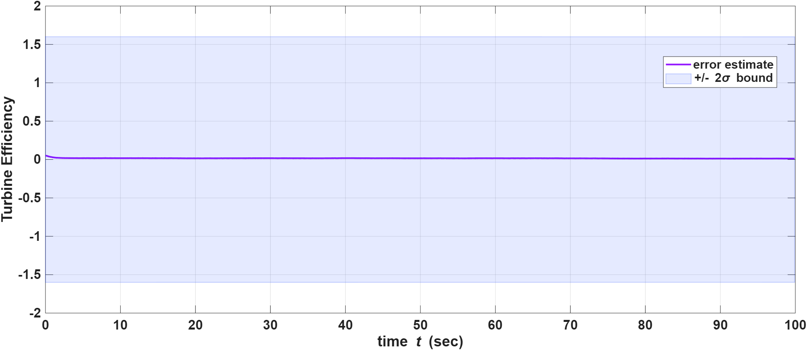

Problem
Gas turbines operate under highly nonlinear thermodynamic conditions and degrade gradually from wear, thermal stress, and fouling. Health monitoring requires tracking temperatures, shaft dynamics, and component efficiencies—but efficiencies are not directly measured and sensors are noisy.
-
Estimate thermodynamic states—compressor, combustor, and turbine temperatures plus shaft speed.
-
Track slowly varying compressor, burner, and turbine efficiencies which can act as health indicators.
-
Operate under realistic cruise inputs with stochastic perturbations and measurement noise.
-
Validate estimator consistency using ±2σ covariance bounds and observability analysis.
Approach
A seven-state reduced-order thermodynamic model feeds a discrete-time EKF with manually derived Jacobians. Cruise operation uses small stochastic perturbations around nominal fuel and airflow rather than large sinusoidal forcing.
State, input, and measurement
Input u = [T₁, mf, ma]T
Measurement z = [T₂, T₃, T₅, N]T
Compressor, burner, and turbine efficiencies are modeled as slowly varying states (random walk) so the EKF can track gradual degradation and use them as health indicators. Exhaust temperature T₅ is computed from turbine outlet conditions via a nozzle relation; T₄ is not measured directly and is inferred through model coupling.
Nominal cruise: T₁ ≈ 490 K, ma ≈ 25 kg/s, mf ≈ 0.09 kg/s · R = diag([1.5², 2.5², 4², 100²]).
Nonlinear engine model
The gas path is represented with simplified nonlinear thermodynamic equations—a reduced-order cruise model coupling compressor map physics, burner heat release, turbine work, shaft dynamics, and a nozzle-based exhaust temperature for measurement.
Map relations (nonlinear in N and T₁)
PRc = 1 + pc · N² / T₁
Wsh = wc · N² / T₁
Continuous-time state dynamics
Discrete simulation uses Euler integration (Δt = 0.1 s). Efficiencies ηc, ηb, ηt follow a slow random walk between steps to represent gradual degradation.
Ṫ₂ = ( T₁(1 + (PRc(γ−1)/γ − 1) / ηc) − T₂ ) / τc
Ṫ₃ = ( T₂ + mf·LHV·ηb / (cp·ma) − T₃ ) / τb
Ṫ₄ = ( T₃ − Wsh / (ma·cp·ηt) − T₄ ) / τt
Ṅ = nc·ma·cp·(T₃ − T₄ − T₂ + T₁)
η̇c, η̇b, η̇t ≈ random walk (σeff = 10−4 per step in simulation)
Measurement model (nonlinear nozzle)
T₅ = T₄ · ( 1 − ηn · ( 1 − PRn(γ−1)/γ ) )
Sensors: z = [T₂, T₃, T₅, N]T with R = diag([1.5², 2², 4², 100²]). T₄ is inferred by the EKF because it is not directly measured.
| Symbol | Meaning | Value |
|---|---|---|
| γ | Ratio of specific heats | 1.4 |
| cp | Specific heat | 1005 J/(kg·K) |
| LHV | Fuel lower heating value | 43×10⁶ J/kg |
| τc, τb, τt | Compressor / burner / turbine lags | 0.3 · 0.8 · 0.5 s |
| pc, wc, nc | Map & shaft coupling constants | Tuned in ekf5.m |
The model stays reduced-order for computational tractability and EKF Jacobian derivation while retaining the nonlinear coupling between temperatures, shaft speed, and efficiency health states.
EKF and observability
-
Prediction
x̂k+1|k = f(x̂k|k, uk) · Pk+1|k = FkPk|kFkT + Q
-
Update
Kalman gain from Hk; Joseph-form covariance update for numerical stability.
-
Jacobians
Fk and Hk derived analytically—not finite differences.
-
Observability
Local observability rank checked during simulation; full local observability achieved for all seven states.
Results
The EKF tracked states and efficiencies under noisy cruise conditions and a moderately harsh initial guess. Estimation errors settle within ±2σ bounds after brief transients—the purple error curves stay inside the blue confidence bands.
Temperature and shaft speed

T₂ — fast convergence, error within ±2σ

T₃ — large initial transient, then tight tracking

T₄ — inferred without direct measurement

N — filter reduces ±100 RPM measurement scatter
Component efficiencies (health indicators)

Compressor ηc — rapid convergence, tight uncertainty

Burner ηb — slower uncertainty reduction

Turbine ηt — near-zero error, wider ±2σ band
Key learnings
-
Observability is design-dependent
States in the vector are not automatically observable—coupling and measurement choice determine what can be recovered (e.g. T₄ only through model dynamics).
-
Modeling choices matter
Unlike textbook problems with fixed states and sensors, this project required defining states, inputs, measurements, noise levels, and time constants explicitly.
-
Scaling and units
Inconsistent SI scaling (especially RPM and temperature) caused early numerical issues; careful bookkeeping was part of making the EKF reliable.
-
Model + tuning + honesty
A usable estimator sits at the intersection of correct physics, consistent Jacobians, and realistic noise assumptions—not filter equations alone.
MAE 6760 Model Based Estimation, Cornell University · Full MATLAB implementation and references in the project report.
Downloads
Project report (full write-up) and MATLAB source for the 7-state EKF simulation.